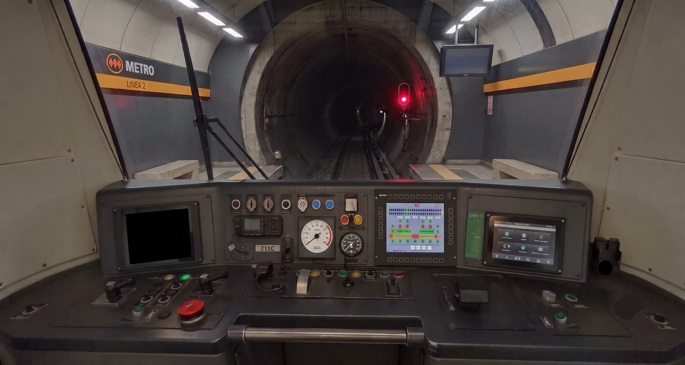
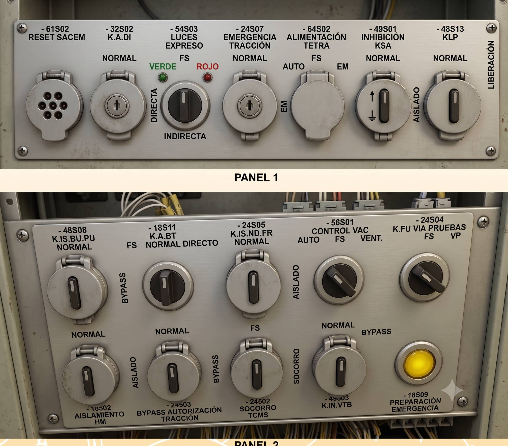

Cargando Nivel...
Inicializando protocolo operativo...
Pupitre Principal
Armario BT3
Cambiar Nivel
Resetear
Terminar
Mirar Entorno / Vías
Inspeccionar Salón / Puertas
Llaves Aislamiento (XFR/XFI/XFP)
Desplegar Escala Evacuación


Seleccionar Posición
Llaves de Aislamiento de Boguies
Llave XFR (Freno Retenido/Neumático - Amarilla):
NORMAL
Llave XFI (Freno de Inmovilización - Roja):
NORMAL
Llave XFP (Frotador Positivo - Negra):
NORMAL
Confirmar y Cerrar